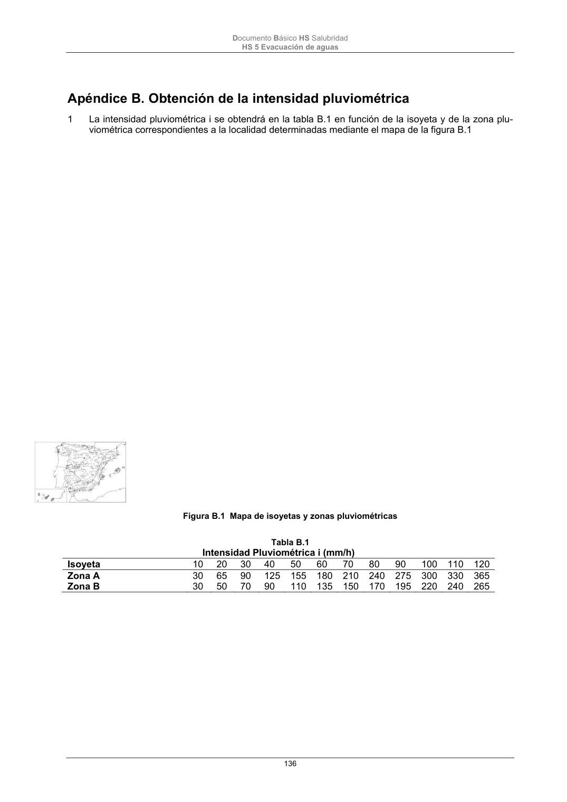

DB-HS Salubridad · edición 2022-06-14 · capa oficial
Documento DB-HS-oficial · SHA-256 del PDF 68df3caacc95f71aee2ec1ba7b2c65ae66155c21e3a8785521b8fdd4fd640d3b
Página física 136 de 184.
Copia fiel del PDF fuente · Fuente oficial
Ficha de la disposición en la fuente oficial
Formato: Texto de la página (Markdown)
Documento Básico HS Salubridad HS 5 Evacuación de aguas 136 Apéndice B. Obtención de la intensidad pluviométrica 1 La intensidad pluviométrica i se obtendrá en la tabla B.1 en función de la isoyeta y de la zona plu- viométrica correspondientes a la localidad determinadas mediante el mapa de la figura B.1 Figura B.1 Mapa de isoyetas y zonas pluviométricas Tabla B.1 Intensidad Pluviométrica i (mm/h) Isoyeta 10 20 30 40 50 60 70 80 90 100 110 120 Zona A 30 65 90 125 155 180 210 240 275 300 330 365 Zona B 30 50 70 90 110 135 150 170 195 220 240 265
